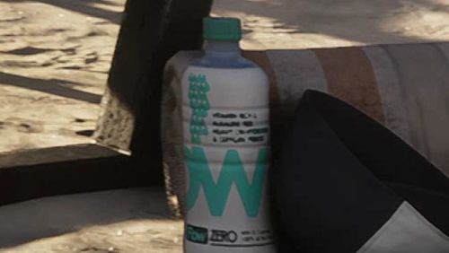

© Rockstar Games / Take-Two Interactive — image officielle de GTA VI (bande-annonce), via GTA Wiki.
Produit de consommation
Flow Water
FICHE TECHNIQUE
Présence dans la série3
ApparitionsGTA VGTA OnlineGTA VI
ActivitéBoissons
Inspirations réellesVitaminwater
Données recensées par le GTA Wiki, sur la page consacrée à cette version de la marque (certaines apparitions plus anciennes peuvent figurer sur une page séparée). « Présence dans la série » = nombre de jeux recensés (jauge pleine à 10 jeux).
Flow Water est une marque d'eau aromatisée de l'univers de GTA.
Statut : de retour — déjà présent dans un ou plusieurs épisodes précédents de la série.
Visuel : la bande-annonce 2 de GTA VI.
Sources : GTA Wiki, Rockstar Games (galerie média)